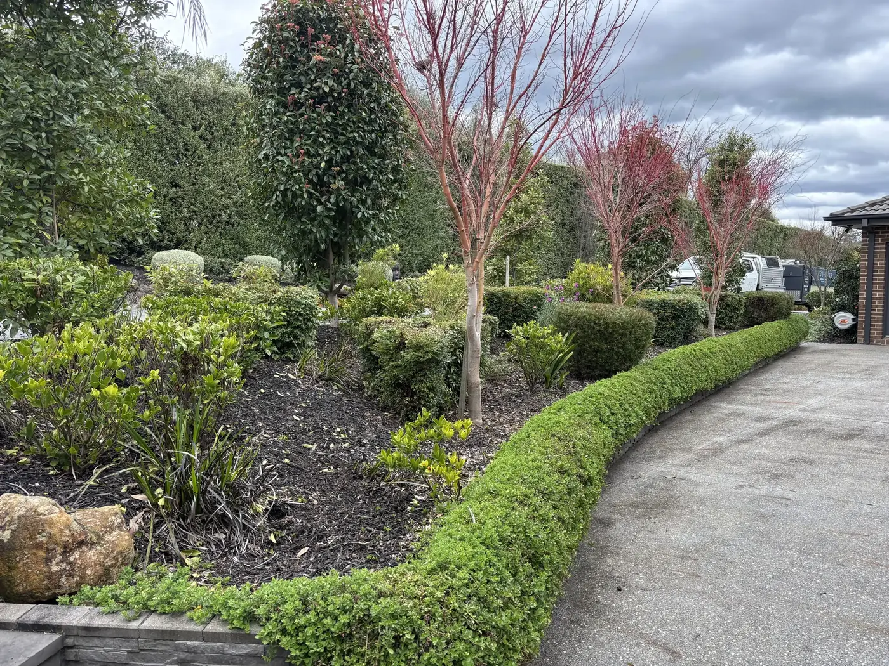

What Is Professional Gardening & Pruning?
Professional gardening and pruning in McLaren Vale covers the full scope of garden care — from routine maintenance and seasonal tidy-ups through to structural pruning, new planting, garden bed preparation, and softscape restoration. It's the difference between a garden that just survives and one that genuinely thrives.
CWS Lawn and Garden Care provides comprehensive gardening services across McLaren Vale, Willunga, Aldinga, Port Willunga, Sellicks Beach, and the wider Fleurieu Peninsula. We work with residential homeowners, rental property managers, and commercial properties requiring regular garden maintenance or one-off seasonal care.
Our gardening services are tailored to the Mediterranean climate of the McLaren Vale region — warm dry summers, mild wet winters, and a rich variety of ornamental, native, and edible plantings common throughout Fleurieu Peninsula gardens. We understand what grows well here, what needs managing, and how to keep your outdoor spaces looking their best through every season.

Gardening Services Included Across the Fleurieu Peninsula
Every gardening and pruning job CWS takes on is scoped to what your property actually needs — not a fixed package. Here's what we cover.
Pruning & Hedge Trimming
Structural pruning of trees, shrubs, ornamentals, and hedges to maintain shape, encourage healthy growth, and remove dead or crossing wood. We prune to the correct timing and height for each plant variety common in McLaren Vale gardens.
Garden Tidy-Ups
Full garden tidy-ups visits covering weed removal, deadheading, cutting back overgrown plants, clearing garden beds, and rubbish removal. Ideal as a one-off pre-season reset or ahead of selling your property across the Fleurieu Peninsula.
Weeding & Garden Bed Care
Manual and targeted weed removal from garden beds, paths, and borders throughout your McLaren Vale property. We remove weeds at the root to prevent regrowth and keep your beds clean between scheduled gardening visits.
Shrub & Ornamental Planting
Selection and installation of shrubs, ornamentals, groundcovers, and seasonal plants suited to the Fleurieu Peninsula's climate. We advise on water-wise species that establish well in McLaren Vale's sandy-loam and clay soils.
Mulching & Soil Preparation
Application of mulch to garden beds suppresses weeds, retains soil moisture through McLaren Vale's dry summers, and feeds the soil as it breaks down. We also prepare beds for new planting with compost and soil amendment where needed.
Ongoing Maintenance Schedules
Regular fortnightly or monthly gardening visits to keep your McLaren Vale property maintained through every season. Ongoing clients receive priority scheduling and consistent care from the same CWS team on every visit.
Gardening in McLaren Vale — What to Do Each Season
The Fleurieu Peninsula's Mediterranean climate creates a distinct gardening calendar. Here's what your garden needs from CWS each season to stay healthy and beautiful year-round.
Spring
The most active growing season in McLaren Vale — gardens need frequent attention as warm weather returns.
Summer
Hot, dry Fleurieu summers stress gardens. Maintenance focuses on preservation, deadheading, and light trimming.
Autumn
Cooler weather brings the ideal planting and pruning window across McLaren Vale gardens.
Winter
McLaren Vale winters are mild — garden care continues with dormant pruning and preparation for spring growth.
Signs Your McLaren Vale Garden Needs Professional Attention
Gardens on the Fleurieu Peninsula can fall behind quickly through summer. Here's when to call CWS.
Overgrown Shrubs & Hedges
Shrubs growing past windows, paths, or fences, and hedges losing their shape are the most common reason McLaren Vale homeowners call for professional gardening. CWS restores clean lines and healthy structure in a single visit.
Garden Beds Overtaken by Weeds
Weeds competing with established plants steal moisture and nutrients — critical during McLaren Vale's dry summers. Regular garden maintenance visits keep beds clean and your plants thriving without the competition.
Plants Not Flowering or Fruiting
Lack of blooms or fruit is often a sign of incorrect or missed pruning, nutrient deficiency, or overgrown root competition. Professional gardening in McLaren Vale addresses all three — restoring your plants to productive health.
Property Going to Market
Gardens are the first thing buyers see. A professional garden tidy-up — including pruning, weeding, mulching, and bed clearing — adds genuine kerb appeal before you list your Fleurieu Peninsula property for sale.
Seasonal Reset Needed
After a long summer or wet winter, McLaren Vale gardens often need a full reset — clearing spent plants, cutting back perennials, and refreshing mulch. CWS provides seasonal tidy-ups that get your garden back on track fast.
No Time to Keep Up
Life is busy — and Fleurieu Peninsula gardens don't wait. A regular gardening schedule from CWS takes the work entirely off your plate, with fortnightly or monthly visits keeping everything maintained without you having to think about it.
Our Gardening Process in McLaren Vale
Four straightforward steps from your first enquiry to a beautifully maintained McLaren Vale garden.
Free Quote Request
Call 0402 559 065, email us, or complete the quote form. Tell us your suburb, property type, and what your garden needs — we'll take it from there.
Garden Assessment
We visit your McLaren Vale property, walk the garden with you, assess current conditions, and discuss your priorities — then provide a clear, fixed quote with no hidden costs.
Professional Garden Care
We carry out the agreed gardening scope — pruning, weeding, mulching, planting, or a full tidy-up — and remove all green waste from your property before we leave.
Ongoing Maintenance
After the initial visit, we set up a seasonal or regular gardening schedule — fortnightly or monthly — so your Fleurieu Peninsula garden stays looking its best all year without effort on your part.
Why Choose CWS for Gardening in McLaren Vale
Experts in Fleurieu Peninsula Gardens
We understand the plants, soils, and seasonal rhythms specific to McLaren Vale, Willunga, and the wider Fleurieu Peninsula — from ornamental natives and cottage garden species to Mediterranean herbs and deciduous trees common throughout the region.
One-Off or Regular — Your Choice
CWS offers single garden tidy-up visits as well as ongoing monthly or fortnightly maintenance schedules. Whether you need a one-time pre-sale clean-up or year-round garden management, we adapt to what works for you.
Full Green Waste Removal
Every gardening and pruning visit includes full green waste removal from your property. We don't leave you with piles of clippings, prunings, or weeds — everything is cleared and removed as part of the standard service.
Fully Insured & Professional
All gardening and pruning services are carried out with full public liability insurance. Your property, plants, and structures are covered on every CWS gardening visit across McLaren Vale and the Fleurieu Peninsula.
CWS Gardening at a Glance
Recent Gardening Projects in McLaren Vale & Surrounds
From precision hedge trimming in McLaren Vale to full seasonal resets in Willunga and garden tidy-ups ahead of property sales across the Fleurieu Peninsula — here's a look at the gardening work CWS delivers every week.

Gardening Services Across McLaren Vale & the Fleurieu Peninsula
CWS provides professional gardening and pruning services throughout McLaren Vale and across the wider Fleurieu Peninsula. Our primary gardening territory covers McLaren Vale, Willunga, McLaren Flat, Aldinga, Aldinga Beach, Port Willunga, Sellicks Beach, and the surrounding suburbs.
We understand the distinct gardening requirements across each area — from the ornamental cottage-style gardens of McLaren Vale's heritage properties, to the coastal-exposed gardens of Aldinga Beach and Port Willunga that require salt and wind-tolerant plant choices, through to the larger garden estates common around Willunga and Encounter Bay.
Not sure if we cover your suburb? Call us on 0402 559 065 — we service far more of the Fleurieu Peninsula than most expect.
Frequently Asked Questions About Gardening in McLaren Vale
Answers to the questions we hear most from McLaren Vale and Fleurieu Peninsula homeowners about our gardening and pruning services.
What gardening services does CWS provide in McLaren Vale? +
CWS provides a full range of gardening services in McLaren Vale including pruning and hedge trimming, garden tidy-ups, weeding and garden bed care, shrub and ornamental planting, mulching, soil preparation, and ongoing seasonal maintenance schedules. We tailor every visit to what your specific garden needs — no locked-in packages, no unnecessary extras.
How much does professional gardening cost in McLaren Vale? +
Gardening costs depend entirely on the size of your garden and the scope of work required. A one-off major garden tidy-up or structural pruning visit will cost more than a regular fortnightly maintenance visit. We provide free, no-obligation quotes so you know exactly what the work will cost before we start.
When is the best time to prune plants in the McLaren Vale region? +
It depends on the plant. Most deciduous trees and roses in McLaren Vale are best pruned in late winter before spring growth begins. Spring-flowering shrubs should be pruned immediately after they finish flowering. Hedges generally require light pruning through spring and summer, with a harder structural prune in autumn. We time all pruning to suit the specific plant and local climate.
Do you offer one-off garden tidy-ups or only regular schedules? +
We offer both. Many of our McLaren Vale clients book us for a one-off seasonal reset (like a major spring or autumn tidy-up) or a pre-sale garden makeover. Others prefer the peace of mind of a regular fortnightly or monthly maintenance schedule where we handle everything year-round.
Do you remove green waste after gardening visits? +
Yes, absolutely. Every gardening and pruning visit from CWS includes full green waste removal. We clear away all clippings, prunings, weeds, and debris, leaving your McLaren Vale property clean and tidy.
Can you recommend plants that suit McLaren Vale's climate? +
Yes. We have extensive experience with the soils and Mediterranean climate of McLaren Vale and the Fleurieu Peninsula. We can advise on and plant species that are water-wise, suited to your specific soil type (whether sandy-loam or clay), and will thrive in your garden's microclimate.